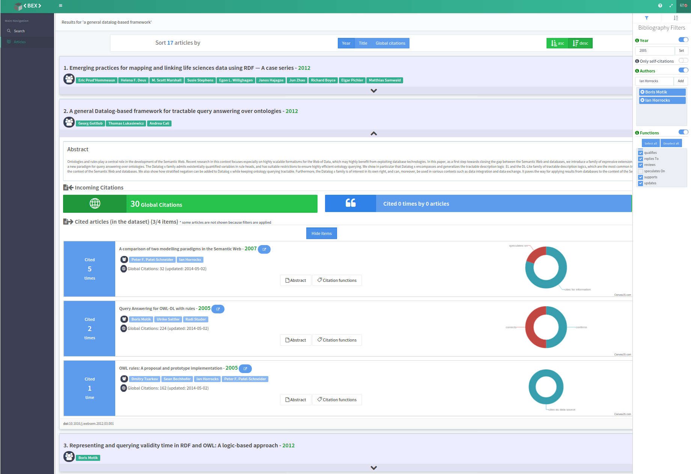
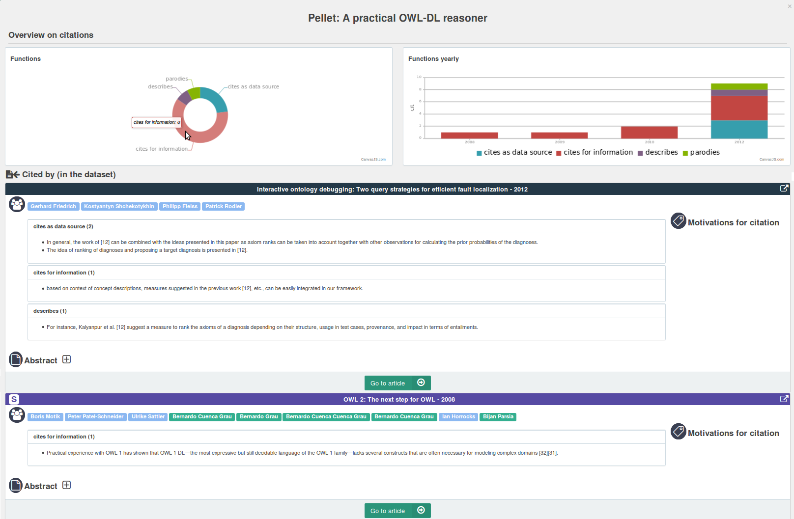

Bibliographies are fundamental tools for research communities. Besides the obvious uses as connection to previous research, citations are also widely used for evaluation purposes: the productivity of researchers, departments and universities is increasingly measured by counting their citations. Unfortunately, citations counters are just rough indicators: a deeper knowledge of individual citations – where, when, by whom and why – improves research evaluation tasks and supports researchers in their daily activity. Yet, such information is mostly hidden within repositories of scholarly papers and is still difficult to find, navigate and make use of.
In this paper, we present a novel tool for exploring scientific articles through their citations. The environment is built on top of a rich citation network, encoded as a LOD, and includes a user-friendly interface to access, filter and highlight information about bibliographic data.
Researchers spend a lot of time in exploring bibliographies. When writing a paper, when exploring a new research area, when evaluating papers, they use bibliographies for finding related works. Starting from one paper, researchers are interested in the papers cited by that one and those it cites. It is not a case that digital libraries of scholarly papers - such as ACM DL, IEEE Xplore DL - show bibliographic references and incoming citations in separate lists, that can be often explored even if the full-text of the paper is not available.
Digital libraries show bibliographies are 'monolithic' units, so that users cannot process bibliographic items separately. Consider, for instance, the case of a user checking how outdated the references of a paper are. There is no other choice than inspecting the references and manually filtering outdated ones. Similarly, counting self-citations requires users to manually inspect the reference list.
Even if performing these task is not a huge issue on a single paper, it's still time-consuming and difficult when dealing with several papers. The aggravating factor is that, often, these tasks have to be completed under pressure: who can say that he had never written a review right before the (extended) deadline? Or made an initial selection of papers in a few hours? Or even arranged a related works section in short time?
Our research aims at supporting researchers in these daily tasks, making it easy to access data that otherwise are hard to find, inspect and filter.
The problem can be broken in two parts. First, we need rich data about papers (e.g. author list, publication year, venue, etc.) and citation networks (e.g. about incoming/outgoing citations). For instance, it is useful and challenging to capture the original citation context - defined in as the sentence of the original paper where a particular work was cited - and the citation function, defined in as the reason why a paper is cited. Having such data can be very helpful to understand the nature of citations and to give them more or less importance.
The second issue consists in providing users with intuitive interfaces to read and make sense of these data - for instance, to easily filter data, to navigate paper collections, to explore citations, along with their functions and contexts.
This paper focuses on the second aspect, though some discussion is provided about the underlying data model and source. In fact, we briefly introduce the Semantic Lancet Triplestore (SLT), a LOD dataset including detailed information about citations, and then we go into details of BEX, a novel environment for accessing these data.
The structure of the paper is as follows. describes some related works; some issues in daily tasks on citations, along with possible improvements, are investigated in ; gives some background on the Semantic Lancet Triplestore; BEX is introduced in ; the evaluation of the current prototype and conclusions are presented in .
A large variety of systems support the exploration of scholarly data, some of them providing an interface to a specific repository of bibliographic information, others integrating multiple data sources to provide access to a richer set of data and navigation functionalities. Some well-known platforms are Google Scholar , DBLP and CiteSeerX . These systems are not designed to support sense-making tasks in the academic domain. On the contrary, Microsoft Academic Search provides a variety of visualizations, including co-authorship graphs, publication trends, and co-authorship paths between authors. Paperlens is another visual analytics tool that provides multiple coordinated views in order to reveal trends, support the analysis of connections, and describe activities throughout conference communities. Action Science Explorer leverages statistics, citation text extraction, natural language summarization, and network visualization to see citation patterns and identify clusters.
There is an ever increasing interest in making bibliographic data also available as Linked Open Data (LOD). The current landscape is fragmented but a lot of information is available, through SPARQL end-points. For instance, DBLP++ makes available RDF data corresponding to those collected in DBLP. The dataset does not contain any data about citations, though the quality of data about papers and authors is very high.
The JISC OpenCitation corpus provides freely available data about (more than three million) papers published in Open Access PubMed Central , including a lot of information about citations. The dataset also contains abstracts and data about authors, though these are not available for all papers. It is very well-structured and high-quality but currently not active.
SemanticWeb Dog Food contains semantic data about Semantic Web conferences and workshops. The dataset contains bibliographic records about papers and authors, including their affiliations. There are no data about abstracts, classification and citations. Since the corpus is composed of different datasets, created and uploaded separately for each conference, the overall quality is not homogeneous.
The BioTea project deserves a special mention. Its goal is to make the biomedical literature available as RDF, taking papers again from PubMed Central. The dataset is very complete. One of the peculiar aspects is that BioTea gives a lot of relevance to the content, providing abstracts for all papers and expressing in RDF some structural components such as sections, paragraphs, etc. There are no citation contexts and functions but the dataset could be easily extended in that direction.
The great amount of data available on citations and, in particular, the possibility of navigating papers through citations are powerful tools in the hand of the researchers. Researcher performs different tasks on citations according to the role they play. The researcher is first of all a reader, who reads articles and navigate them through citations. The process of finding relevant works is very common when writing new papers and project proposals: indeed, a researcher is also an author. The research community also relies on peer-review processes, which require researchers to also act as reviewers or editors. When reviewing papers, a researcher uses citations and checks, for instance, the number of self-citations or the publication year of the cited papers. Citations are also increasingly used for evaluation purposes. Researchers are then asked to be part of academic boards in charge of evaluating research products. Our analysis covers such a scenario with a specific role: evaluator. Researchers are involved in organizing scientific events, thus we added the role of event organizer.
In this section we describe some of the most common tasks that researchers perform on bibliographies when playing all these roles. There are many other tasks characterizing each of these roles but they are left out of discussion, since they are not specific on bibliographies.
summarises our analysis. The discussion uses the well-known terminology of : the term goal is used to indicate a final objective a user wishes to achieve, a task is a sequence of one or more activities the user thinks are required to achieve a goal. Each task is specific of a peculiar user role. Note also that we did not decompose each task in hierarchical subtasks, for the sake of simplicity.
| No. | Role | Goal/Task |
|---|---|---|
|
1 |
reader/author |
goal: build/update a bibliography [of recent papers] on a given topic
|
|
2 |
reviewer |
goal: evaluate if a paper is up-to-date
|
|
3 |
reviewer, editor |
goal: evaluate how much a work is self-referential
|
|
4 |
reviewer, editor |
goal: evaluate if a paper fits the scope of a journal/conference
|
|
5 |
evaluator |
goal: evaluate the impact of a paper
|
|
6 |
evaluator |
goal: evaluate the impact of a researcher
|
|
7 |
event organizer |
goal: find potential participants
|
Task 1 consists in building or updating a bibliography on a given topic. A common approach is to use keyword-based search tools, scan the list of returned papers and filter potentially relevant ones. Researchers might read abstracts to have a clearer idea of each paper. Further candidates are often searched by analysing citation networks: starting from a list of relevant papers, incoming and outgoing citations are scanned and, in turn, new candidates are analysed and, if relevant, added to the list. The criteria used to discern among papers may vary a lot: considering the total number of citations may be a suitable indicator to identify seminal papers, whereas it may fail when searching for recent developments or cutting edge works. In the second case, other criteria such as the publication date are more convenient. In all cases, the researchers have to inspect the list of citations and to manually find relevant information.
Tasks 2 is performed by researchers as reviewers. To evaluate if a paper is up-to-date, they inspect the bibliography and look at the publication year of each item. Furthermore they check if any relevant recent paper is not cited. These operations are still manual. One of the reasons is that, in almost all cases, papers under revision are PDFs and the bibliographic references cannot be processed as separate units.
The same applies to Tasks 3 and 4. The first one covers the analysis of self-citations: in fact, the reviewers/editors check how many cited papers are written by the same authors (or some of them). The editors/reviewers might also want to check the number of papers cited by a paper submitted to a journal and published in the same journal. That might be an indicator of the suitability of that paper for that journal.
The evaluation of research works (Task 5) and researchers (Task 6) is often performed by counting the incoming citations to each research work and by aggregating them for further analysis. Thus, evaluators need to easily access information about the number of times each paper is cited and to know how those citations are distributed in time. One aspect that is still under-estimated when evaluating citations is their nature. In fact, not all citations are equal: some are given just for information, some as necessary background, some refers to a work the citing paper is an extension of. It would be useful to store and be able to analyse citations together with the sentence to which they belong to (citation context), or together with information about the reason why a paper is cited (citation function). A time perspective is helpful here. For instance, we can expect that an important work is referenced for information or used as background for many years, but if it keep being extended, or some methods therein contained are used for a long time, it means it still plays an active and important role. To the best of our knowledge, none of the existing repositories of scholarly papers make such information available.
There is a further common task that researchers perform by exploring papers and citations: finding experts in a given topic or simply people who are interested in that topic. These people usually are searched among the authors of relevant papers --- that, as discussed so far, are found by exploiting citations too. Such expert finding task might be useful, for instance, when searching for potential participants to a scientific events (Task 7).
Even though existing repositories make bibliographies available as separate units, the lists of references are treated as `monolithic' units: the users can export citations and navigate to the cited/citing papers but they are not allowed to filter bibliographic references, or to show only some references, or to show detailed information about each reference.
This is first of all a problem of usability due to the lack of specific functionalities. But it also depends on the way data are structured and made available. In fact, most of the existing repositories do not offer APIs to access data (e.g. Google Scholar) or offer partial APIs that do not cover all needed aspects (e.g. ScienceDirect and Scopus).
Our approach to address these issues consists of two steps:
building a LOD on scholarly publications, that includes rich information about papers and citation networks
providing users with an intuitive interface to access, explore and make use of these data
The paper is focused on the second aspect but we need some background about the underlying data source. Thus, here we present SPAR, the set of ontologies used in our system, and the Semantic Lancet Triplestore (SLT), a SPARQL end-point build on top of SPAR and used as backend.
SPAR is a set of OWL ontologies that describe the most relevant aspects of the publishing process, with particular attention to scholarly publications . We adopted some of them in our project. FaBiO describes the core metadata associated to scholarly articles (e.g., authors, title, DOI); it is then used to create accurate and unambiguous representation of each paper.
The CiTO ontology introduces the cito:cites property to indicate that a given paper cites another one. The interesting aspect is that CiTO also defines a list of properties that specialise cito:cites and capture citation functions (for instance, cito:extends, cito:usesMethodIn, cito:disagreesWith). Thus, users can deeply characterise citations, though this still remains a difficult task, with a very low agreement among humans . The BiRO ontology (BiRO) allows users to describe bibliographic references and their compilation into reference lists. This is a key aspect for our approach: the internal organisation of the references of a paper is fully captured, so that bibliographic items can be manipulated as separate units. The C4O ontology makes it possible to capture the citation context of each citation; it also includes a mechanism for counting citations locally (within an article) or globally (by means of particular platforms). These values can be used for evaluation purposes and to measure the impact of each paper, as discussed in . More details about BiRO and C4O can be found in .
The Semantic Lancet Triplestore (SLT) is a freely available LOD dataset built on top of these ontologies . SLT includes rich data about scholarly papers, that range from a large network of citations, to semantically-enriched abstracts, from provenance data to time-aware descriptions of the articles. The current dataset describes all papers published in the Journal of Web Semantics by Elsevier, though we are working to add data about articles of other journals. SLT contains bibliographic records and full details about citations, and is used as primary data source for our application called BEX.
BEX is an interactive web-based tool aimed at supporting the analysis, exploration and sense-making process of document collections. The BEX design and the consequent user interaction are driven by Shneiderman's Information Seeking Mantra : “Overview first, zoom and filter, then details-on-demand”.
The navigation starts with three search functionalities: in addition to the classical string search on author and title, the user can also search relevant papers according to their content. This search is performed by an external service. Other services, for instance based on full-text search or other mining techniques, can be integrated with a few modifications to BEX.
We achieved good results by exploiting a service called Abstract Finder . It relies on FRED and exploits the semantic information about concepts, events, roles and named entities contained in the paper abstracts and extracted from the text with NLP techniques. Thus, through BEX a researcher can write in the search box a tentative abstract for her/his paper to retrieve meaningful papers that match with it from a pure textual but also semantic point of view, as shown in .

The results are organized as a list of papers, ordered by default from the most recent to the oldest one. Through the sorting box at the top of the interface, the user can easily define custom criterion to order the results (i.e. year, title, number of citations) and the order type. For each returned paper, BEX shows a summary of basic information and a link to the paper official page on Elsevier's ScienceDirect.
In order to gather more information about a paper in the list, the user can open a sliding box showing the full abstract and data on citations. The information about the citations is organized in two parts: outgoing and incoming.
By clicking on the "Show items" button, the user can get access to the information about the outgoing citations, as shown in the central part of . BEX organizes the cited papers in a vertical list. For each paper BEX shows (from left to right): the number of times in which the paper is referenced by the paper under examination, some general information about the paper, and a piechart summarizing the number and type of citations received from the focus paper. Moreover, abstract, citation functions and contexts are shown in popups windows.

In the incoming citation section, two counters show the number of global and internal citations received by the paper under examination. The term 'global' here indicates citations for a paper as counted by external services (Scopus); the term 'internal' indicates the citations given by papers described in our dataset (published in the Journal of Web Semantics).
Further details about the citation functions of incoming internal citations are available. As shown in , this information is presented in a popup window organized in three parts: a pie chart gives an overview of the number and type of incoming citations (top left), a column chart shows the distribution of the citation functions on a time axis (top right), and details about the citation contexts are presented in the bottom. In the two charts at the top of the page, different colors are used to encode the function of each single citation, and citations with the same function are grouped together. Finally, the last component shows, for each paper citing the paper under focus, the list of the citation contexts.
Finally, BEX provides a rich list of filtering capabilities and ordering criteria that can used to focus on different aspects of the internal citation network. The filtering functionality, for instance, allows users to filter papers by year, by author and by citation function, optionally excluding self-citations.
BEX was built to successfully carry out the tasks discussed in . For instance, let us consider Task 1, building/updating a bibliography on a specific topic. Once loaded, BEX directly shows the form to insert the topic to be analysed as a keyword list, a short description or a longer text. No further steps are required and this command is consistently available in the left sidebar. Since the candidate papers of a search are organized as a list of expandable items, users can easily read all abstracts by simply scrolling the main window. No further tab or window is opened and the reading process is direct. Note also that other services for searching relevant papers – for instance based on full-text search – can be integrated with a few modifications to BEX.
For each paper in the list, BEX also shows its bibliography in the main panel rather than in a separate tab or modal window. This is helpful to quickly check other potential candidates. The incoming citations, on the other hand, are shown in a separate window. For each of them, BEX provides authorship data, publication year, global citations and abstract. The user can then check indirect references, i.e., other potentially relevant papers, with minimal effort. Note that BEX is currently limited since only data about citations and papers of JWS are available. But this is a limitation of the dataset, not of the application. We are hard working to expand the dataset and to integrate it with other sources.
Additionally, a breadcrumb toolbar tracks all papers accessed during the navigation, so that users can overcome disorientation by rolling back to a paper already visited, and a clickable list of the authors shows details of all the papers written by each author. The possibility of navigating papers of an author and contextually reading their abstracts is also useful to complete Task 7.
Filters showing only the papers of a given author or published after a given year are particularly useful to perform Task 1-5, since the user can enable the appropriate filters and the list of citations is automatically updated. Self-citations deserve a special mention: BEX highlights them with a special icon in all lists, and not only when filtered. This information is constantly available and the users can make use of it it in all tasks.
There is a critical issue on Tasks 2-4 (review process). BEX cannot be used directly when reviewing papers submitted as PDF, as semantically-enriched data about citations are not available. On the other hand, there is lively discussion in the community about using alternative formats for submissions, for instance in RASH as proposed for the SAVE-SD workshop, that could be automatically converted in semantic data processable by BEX . Bibliographies could also be extracted from PDF sources and enhanced with semantic data through automatic conversion processes.
The most interesting aspect of BEX with regard to Tasks 5 and 6 is the availability of citation functions and contexts. These make evident the origin and the actual impact of each citation. Such data are also useful for checking if the citation function is correct, since contexts and functions in SLT were extracted by automatic tools.
We plan to integrate bookmarks functionalities so that users can keep track of relevant information while navigating. Additionally, we are investigating further searching and filtering options. The need for these additional features have been highlighted by our preliminary analysis, but we plan to perform many more structured and complete tests on BEX, and to study how the tool is used by different classes of users.
Qazvinian, V., Radev, D. (2010). Identifying Non-explicit Citing Sentences for Citation-based Summarization. In Proceedings of the 48th Annual Meeting of the Association for Computational Linguistics (ACL 10): 555–564.
Teufel, S., Siddharthan, A., Tidhar, D. (2006). Automatic classification of citation function. In Proceedings of the 2006 Conference on Empirical Methods in Natural Language Processing (EMNLP 06): 103–110.
Peroni, S. (2014). The Semantic Publishing and Referencing Ontologies. In Semantic Web Technologies and Legal Scholarly Publishing, Law, Governance and Technology Series 15: 121–193. Springer.
Ciancarini, P., Di Iorio, A., Nuzzolese, A. Peroni, S., Vitali, F. (2014). Evaluating citation functions in CiTO: cognitive issues. In Proceedings of the 11th Extended Semantic Web Conference (ESWC 2014), LNCS 8465: 580–594. Springer.
Di Iorio, A., Nuzzolese, A. G., Peroni, S., Shotton, D., Vitali, F. (2014). Describing bibliographic references in RDF. Proceedings of 4th Workshop on Semantic Publishing (SePublica 2014). http://ceur-ws.org/Vol-1155/paper-05.pdf.
J. Preece, J., Carey, T. , Rogers, Y., Holland,S. , Sharp, H. Benyon,D. Human-Computer Interaction. Ics Series. Addison-Wesley Publishing Company, 1994.
Shotton, D. (2013). Publishing: Open citations. Nature, 502(7471): 295–297.
García-Castro, L., McLaughlin, C., García Castro, A. (2013). Biotea: RDFizing PubMed Central in support for the paper as an interface to the Web of Data. Journal of Biomedical Semantics, 5 (Suppl1): S5.
Presutti, V., Draicchio, F., Gangemi, A. (2012). Knowledge extraction based on discourse representation theory and linguistic frames. In Proceedings of the 18th International Conference on Knowledge Engineering and Knowledge Management (EKAW 2012): 114–129. Springer.
Shneiderman, B. (1996). The Eyes Have It: A Task by Data Type Taxonomy for Information Visualizations. In Proceedings of the IEEE Symposium on Visual Languages, pages 336-343,Washington. IEEE Computer Society Press, 1996.
Lee, B., Czerwinski, M., Robertson, G., Bederson, B. (2005). Understanding research trends in conferences using PaperLens. In CHI'05 extended abstracts on Human factors in computing systems (pp.1969-1972). ACM.
Dunne, C., Shneiderman, B., Gove, R., Klavans, J., Dorr, B. (2012). Rapid understanding of scientific paper collections: Integrating statistics, text analytics, and visualization. Journal of the American Society for Information Science and Technology, 63(12), 2351-2369.
Muller, K., Heath, T., Handschuh, S., Domingue, J. (2007). Recipes for Semantic Web Dog Food: the ESWC and ISWC metadata projects. In Proceedings of the 6th International Semantic Web Conference and the 2nd Asian Semantic Web Conference (ISWC’07/ASWC’07): 802–815. Berlin,Germany: Springer.
http://cs.unibo.it/save-sd/rash/
As a matter of fact, this paper was submitted in RASH, including RDFa annotations about citations.